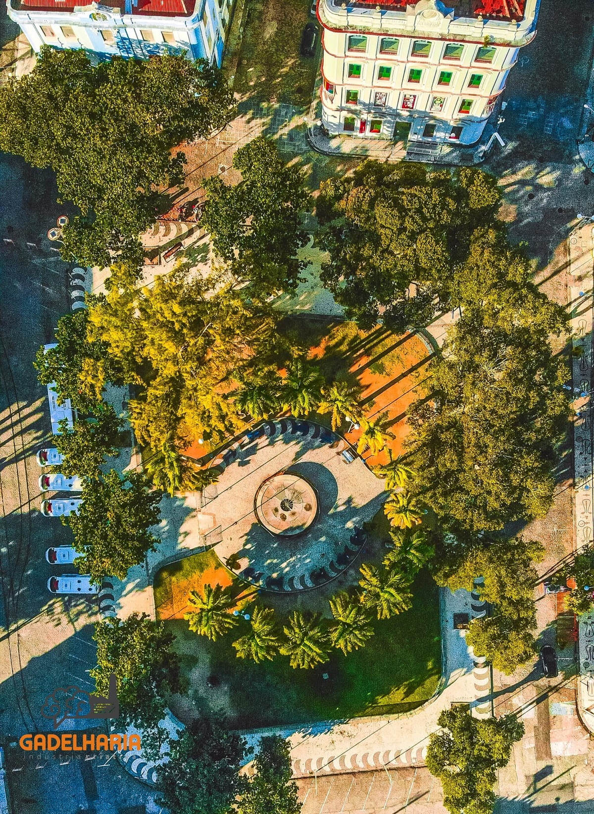

A Praça do Arsenal da Marinha
A Praça do Arsenal, localizada no coração do Recife Antigo, é um verdadeiro tesouro histórico da cidade. Rodeada por edifícios centenários e com vista para o majestoso Porto do Recife, essa praça é um ponto de encontro para moradores locais e visitantes.
